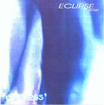

Home Artist links

Eclipse - Ageless
| Artist: | Eclipse |
| Title: | Ageless |
| Label: | self produced demo |
| Length(s): | 23 minutes |
| Year(s) of release: | 2001 |
| Month of review: | [04/2002] |
Line up
Tamás Tisza - guitar
Tamás Barna - guitar
Tibor Rákos - vocals
József Takács - drums
Attila Hudák - bass
Tracks
| 1) | Asleep | 3.59
|
| 2) | Somewhere To Something | 4.27
|
| 3) | Circulation | 4.18
|
| 4) | Before The Rain | 4.17
|
| 5) | Pictures Of A City | 5.42
|
Summary
A demo cd I got from Hungary. This mini album was co-produced by a member
of after@all. The album includes a cover of King Crimson's Pictures Of A City.
The music
Asleep combines the heavy rock guitars of Soundgarden or a progmetal band like
Dream Theater with a more psychedelic approach to music. The lead guitar sound is
rather distinctive, being very echoey. The vocals can be rough on the one hand, but
also includes vocal harmonies on the other. A rather noisy track with plenty of
variation. Somewhere To Something reveals one of the main influences of the band,
King Crimson, most notably in the repetitive guitar style. The vocals are mixed
a bit into the back at times and do not alwys sound very clear. This might have been
done on purpose, because some of the other vocals are more obtrusive.
This is again a progmetal/rock track, with repetitive Frippian guitar and varying
signatures. Again the compact rock music comes over well, although my feeling is that
the production could be a bit cleaner.
A groovy guitar opens on Circulation, in fact it has quite a jazzy feel. The Crimson
reference is there again, but the heavy rhythm guitar and the jazz feel gives
the song a different feel. To me, the song is a bit too funky, and melodically it falls
short. Before The Rain opens with the guitar lines of a typical eighties Crimson track
with the addition of course of a rhythm guitar. The music is many layered with lots
of things happening at the same time, making for a rather chaotic overall feel.
A bit more clarity would be nice (for me). Not a bad track though with some nice melodies,
but they do get drowned a bit.
The final tune is a cover of Crimson's Picture Of A City, which they thought needed
an updated version. The guitar sound is quite heavy on this track, as are the vocals.
A very nice cover indeed that leaves the anger and sinisterness of the original intact.
The sound spectrum is also less full on this track, which helps it come over better.
Conclusion
This shortish demo album is an introduction to the complex layered music of Eclipse.
The band operates in an area between Dream Theater and King Crimson with the vocals
being more in the alternative rock style (as opposed to (prog)metal). The band
after@all also operates in this vein, but does it a lot better. This also has something
to do with the fact that the songs on this album are all rather alike in style,
where after@all is more experimental. However, for a debut certainly not bad and I
am curious to see how they shall have progress on their debut album.
© Jurriaan Hage